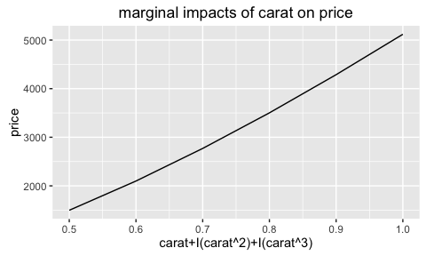
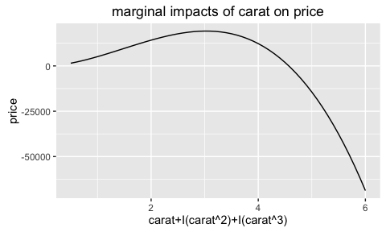
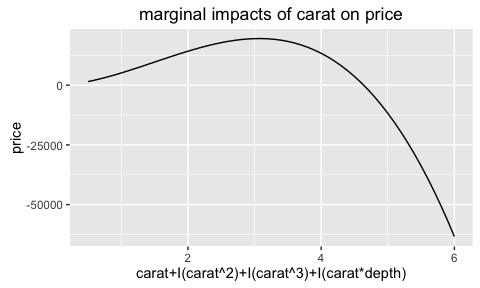

linear.tools
linear.tools
Fan Yang
2015-08-10
This package has two parts:
- The first part provides tools to manipulate formulas.
- The second part provides functions to evaluate and check the marginal impacts of a linear model.
1 First Part: Manipulate formulas
1.0.1 different forms of x
Variables in R’s linear formula/model can have different forms:
- Model variables, the items showed up directly in the formula, separated by the ‘+’ sign.
- Raw variables, the underlying variables used.
- Coefficient variables, the coefficient names; note that un-evaluated formulas don’t have those variables.
1.0.2 model variables: get_x(formula/model,'coeff')
data = ggplot2::diamonds
diamond_lm = lm(log(price)~ I(carat^ 2) + cut + carat + table + carat:table, data)At the first sight, the linear model above contains 5 variables:
- I(carat^ 2)
- cut
- carat
- table
- carat:table
In linear.tools we call them model variables and can access them using function get_x(.,'model'):
get_x(diamond_lm,'model')## [1] "I(carat^2)" "cut" "carat" "table" "carat:table"Note that in the original formula, there are redundant spaces ‘I(carat^ 2)’; in get_x(.,'model') we deleted them.
1.0.3 raw variables: get_x(formula/model,'coeff')
Sometimes you want to get the underlying raw variables used in the formula, which are
- carat (the underlying variable for I(carat^ 2))
- cut
- carat
- table
In linear.tools we call them raw variables and can access them using function get_x(.,'raw'):
get_x(diamond_lm,'raw')## [1] "carat" "cut" "table"get_x(.,'model') will show the linkage between model variables and raw variables: it will return a list with names as model variables and elements as their corresponding raw variables.
get_model_pair(diamond_lm, data, 'raw')## $`I(carat^2)`
## [1] "carat"
##
## $cut
## [1] "cut"
##
## $carat
## [1] "carat"
##
## $table
## [1] "table"
##
## $`carat:table`
## [1] "carat" "table"1.0.4 coefficient variables: get_x(model,'coeff')
Sometimes you want the the coefficient names of the model
get_x(diamond_lm,'coeff')## [1] "I(carat^2)" "cut.L" "cut.Q" "cut.C" "cut^4"
## [6] "carat" "table" "carat:table"You may also want to see how ‘model’ variables are linked with ‘coeff’ variables: get_x(.,'coeff') will return a list with names as model variables and elements as their corresponding coeff variables.
get_model_pair(diamond_lm, data, 'coeff')## $`I(carat^2)`
## [1] "I(carat^2)"
##
## $cut
## [1] "cut.L" "cut.Q" "cut.C" "cut^4"
##
## $carat
## [1] "carat"
##
## $table
## [1] "table"
##
## $`carat:table`
## [1] "carat:table"1.0.5 link different forms of x: get_x_all(model)
The get_x_all() function will return a data.frame showing all the model variables and their corresponding raw & coefficient variables.
get_x_all(model = diamond_lm)## raw model coeff n_raw_in_model
## 1 carat I(carat^2) I(carat^2) 1
## 2 cut cut cut.L 1
## 3 cut cut cut.Q 1
## 4 cut cut cut.C 1
## 5 cut cut cut^4 1
## 6 carat carat carat 1
## 7 table table table 1
## 8 carat carat:table carat:table 2
## 9 table carat:table carat:table 21.0.6 get y : get_y(formula/model)
get_y(diamond_lm,'raw')## [1] "price"get_y(diamond_lm,'model')## [1] "log(price)"1.1 contrast: get_contrast(model)
Contrasts are how categorical variables show up in coefficients.
When R evaluate categorical variables in the linear model, R will transform them into sets of ‘contrasts’ using certain contrast encoding schedule. See UCLA idre for details.
For example, for categorical variable ‘cut’ in the above model, we can get its contrasts through function get_contrast
# get_contrast will return a list with each element as the contrasts of a categorical variable in the model
get_contrast(diamond_lm)## $cut
## [1] "cut.L" "cut.Q" "cut.C" "cut^4"You can also return the contrast method.
get_contrast(diamond_lm, return_method = T)## $cut
## contr.poly2 Second Part: Evaluate Marginal Effect
In formula y ~ a + I(a^2) + b, We define ‘Marginal Effect’ of a on y as: fixing b, how the change of a will affect value of y. Note that the marginal effect here is not just the coefficients for a and I(a^2), neither the sum.
2.0.1 evaluate marginal effect: effect
We provide a easy tool to show the marginal effect and check its monotonicity. The example below will evaluate how the carat of the diamond will affect its price in a particular model.
# more carats, higher price.
diamond_lm3 = lm(price~ carat + I(carat^2) + I(carat^3) , ggplot2::diamonds) # a GLM
test1 = effect(model = diamond_lm3, focus_var_raw = c('carat'), focus_value =list(carat = seq(0.5,1,0.1))) 
test1$Monoton_Increase## [1] TRUEYou can see that the model did a good job to model monotonic increasing relations between carat and price when carat ranges from 0.5 to 1 ($Monoton_Increase is True).
PS: A more interesting case is that, if you interact carat with the categorical variable cut, you can examine the marginal effects carat under different categories of cut
test_interaction = effect(model = lm(price~ carat*cut + I(carat^2)*cut, ggplot2::diamonds),
focus_var_raw = c('carat','cut'), focus_value =list(carat = seq(0.5,1,0.1))
) 
However, in the model diamond_lm3 when we let the carat ranges from 0.5 to 6, the model failed to get the monotonic increasing relations: in the model below, when carat is larger than 3 approximately, the higher the carat, the lower the price!
test2 = effect(model = diamond_lm3, focus_var_raw = c('carat'), focus_value =list(carat = seq(0.5,6,0.1))) 
test2$Monoton_Increase## [1] FALSE2.0.2 delete the marginal effect and re-evaluate
When a model has a wrong marginal effect, we can use function deleting_wrongeffect to delete a model variable that potentially causes the wrong marginal impacts and then re-estimate the model. This function can keep doing this until the correct marginal impacts are found.
The example below will
- first test the marginal effect of carat on price, which is supposed to be monotonic increasing.
- then as it finds incorrect marginal effect, it will delete one model variable that contains
caratin the most right, and then recheck the marginal effect. - It will keep doing the same thing until the marginal effect is correct, or all model variables containing
caratare deleted.
model_correct_effect = deleting_wrongeffect(model = diamond_lm3,
focus_var_raw = 'carat',
focus_value = list(carat=seq(0.5,6,0.1)),
data = ggplot2::diamonds,
PRINT = T,STOP =F, PLOT = T,
Reverse = F)##
## initial model:
## Estimate Pr(>|t|)
## (Intercept) -198.3337 3.930283e-11
## carat 812.3639 1.540245e-19
## I(carat^2) 5813.2637 0.000000e+00
## I(carat^3) -1308.8438 0.000000e+00
##
##
## check raw var: carat
## check model var: carat, I(carat^2), I(carat^3)
## Correct Monotonicity is supposed to be: Increasing
## Monotonicity is incorrect
## Variable I(carat^3) shall be deleted, and the model shall be re-estimated.
## -------------------------------------------------------
##
## New Model:
## Estimate Pr(>|t|)
## (Intercept) -1832.5774 0.000000e+00
## carat 6677.0273 0.000000e+00
## I(carat^2) 507.9133 9.695712e-131
##
##
## check raw var: carat
## check model var: carat, I(carat^2)
## Correct Monotonicity is supposed to be: Increasing
## Monotonicity is correctmodel_correct_effect##
## Call: glm(formula = Formula_new, family = family, data = data0)
##
## Coefficients:
## (Intercept) carat I(carat^2)
## -1832.6 6677.0 507.9
##
## Degrees of Freedom: 53939 Total (i.e. Null); 53937 Residual
## Null Deviance: 8.585e+11
## Residual Deviance: 1.279e+11 AIC: 9449002.0.3 stepwise regression with correct marginal effect
Stepwise regression is popular in variable selection, but it failed to consider the correctness of marginal effects. stepwise2 enables checking the marginal effects during each step of iteration in stepwise regression; so in each step we will skip those models with wrong marginal effects, and only only choose models among those that have correct marginal effect.
The example below is to use stepwise regression to find the model with highest BIC and with the correct marginal effect.
scope = list(lower = price ~ 1,
upper = price ~ carat + I(carat^2) + I(carat^3) + I(carat * depth) + depth)
### specify the correct marginal effect here
test_suit = list(
carat = list( # the list name must be the raw var
focus_var_raw = "carat", # must specify the focus_var_raw (see deleting_wrongeffect() ) as the raw var
focus_value = list(carat=seq(0.5,6,0.1))
)
)
model_correct_effect = stepwise2(model = diamond_lm3, scope = scope, trace = T,
data = ggplot2::diamonds, STOP = F, test_suit = test_suit)##
## price ~ carat+I(carat^2)+I(carat^3)
## ------------------------
## price ~ carat+I(carat^2)+I(carat^3) + I(carat*depth)
## ------------------------
## price ~ carat+I(carat^2)+I(carat^3) + depth
## ------------------------
## price ~ carat+I(carat^2)+I(carat^3) - carat
## ------------------------
## price ~ carat+I(carat^2)+I(carat^3) - I(carat^2)
## ------------------------
## price ~ carat+I(carat^2)+I(carat^3) - I(carat^3)
## ------------------------
## IC nvar step_count correct_effect_ind
## + I(carat*depth) 938807.6 4 1 0
## + depth 939091.3 4 1 0
## origin 939528.7 3 1 0
## - carat 939608.4 2 1 0
## - I(carat^3) 944876.6 2 1 1
## - I(carat^2) 945450.7 2 1 1
##
##
##
## price ~ carat+I(carat^2)
## ------------------------
## price ~ carat+I(carat^2) + I(carat^3)
## ------------------------
## price ~ carat+I(carat^2) + I(carat*depth)
## ------------------------
## price ~ carat+I(carat^2) + depth
## ------------------------
## price ~ carat+I(carat^2) - carat
## ------------------------
## price ~ carat+I(carat^2) - I(carat^2)
## ------------------------
## IC nvar step_count correct_effect_ind
## + I(carat^3) 939528.7 3 2 0
## + I(carat*depth) 943888.0 3 2 1
## + depth 944394.5 3 2 1
## origin 944876.6 2 2 1
## - I(carat^2) 945466.5 1 2 1
## - carat 962398.3 1 2 1
##
##
##
## price ~ carat+I(carat^2)+I(carat*depth)
## ------------------------
## price ~ carat+I(carat^2)+I(carat*depth) + I(carat^3)
## ------------------------
## price ~ carat+I(carat^2)+I(carat*depth) + depth
## ------------------------
## price ~ carat+I(carat^2)+I(carat*depth) - carat
## ------------------------
## price ~ carat+I(carat^2)+I(carat*depth) - I(carat^2)
## ------------------------
## price ~ carat+I(carat^2)+I(carat*depth) - I(carat*depth)
## ------------------------
## IC nvar step_count correct_effect_ind
## + I(carat^3) 938807.6 4 3 0
## + depth 943753.7 4 3 1
## origin 943888.0 3 3 1
## - I(carat^2) 944552.6 2 3 1
## - I(carat*depth) 944876.6 2 3 1
## - carat 946883.6 2 3 1
##
##
##
## price ~ carat+I(carat^2)+I(carat*depth)+depth
## ------------------------
## price ~ carat+I(carat^2)+I(carat*depth)+depth + I(carat^3)
## ------------------------
## price ~ carat+I(carat^2)+I(carat*depth)+depth - carat
## ------------------------
## price ~ carat+I(carat^2)+I(carat*depth)+depth - I(carat^2)
## ------------------------
## price ~ carat+I(carat^2)+I(carat*depth)+depth - I(carat*depth)
## ------------------------
## price ~ carat+I(carat^2)+I(carat*depth)+depth - depth
## ------------------------
## IC nvar step_count correct_effect_ind
## + I(carat^3) 938779.0 5 4 0
## origin 943753.7 4 4 1
## - depth 943888.0 3 4 1
## - I(carat*depth) 944394.5 3 4 1
## - I(carat^2) 944466.4 3 4 1
## - carat 945118.7 3 4 1# the returned model
model_correct_effect##
## Call: glm(formula = price ~ carat + I(carat^2) + I(carat * depth) +
## depth, family = family, data = data)
##
## Coefficients:
## (Intercept) carat I(carat^2) I(carat * depth)
## -8695.2 20984.0 555.1 -233.1
## depth
## 111.7
##
## Degrees of Freedom: 53939 Total (i.e. Null); 53935 Residual
## Null Deviance: 8.585e+11
## Residual Deviance: 1.253e+11 AIC: 9438002.0.4 compare with step
The model using stepwise2 got correct marginal effect:
test_model_correct_effect = effect(model = model_correct_effect, focus_var_raw = c('carat'), focus_value =list(carat = seq(0.5,6,0.1))) 
whereas the model using traditional algorithm step got wrong marginal effect:
model_wrong_effect = step(diamond_lm3, scope = scope, trace = F, data = ggplot2::diamonds)
model_wrong_effect##
## Call:
## lm(formula = price ~ carat + I(carat^2) + I(carat^3) + I(carat *
## depth) + depth, data = ggplot2::diamonds)
##
## Coefficients:
## (Intercept) carat I(carat^2) I(carat^3)
## -3373.61 10638.46 5650.71 -1261.05
## I(carat * depth) depth
## -156.54 50.77test_wrong_effect = effect(model_wrong_effect, focus_var_raw = c('carat'), focus_value =list(carat = seq(0.5,6,0.1))) 